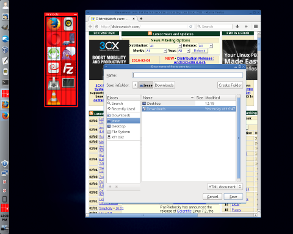
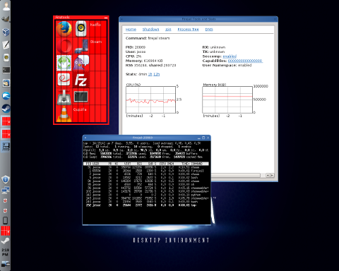

The Firejail security sandbox
Sandboxing is a term which describes isolating programs from each other (or from specific system resources) by limiting their scope or access to parts of the operating system. There are many forms sandboxing can take, from virtual machines to Docker containers. Other mechanisms we can use to isolate processes from resources include SELinux, AppArmor and control groups. These tools are lightweight and powerful, but they can be quite tricky to set up, especially for inexperienced users. SELinux in particular uses a cryptic syntax which people find difficult to master.
Luckily, for those of us who want lightweight, powerful security that is easy to use there is Firejail. The Firejail project describes its software as follows:
Firejail is a SUID sandbox program that reduces the risk of security breaches by restricting the running environment of untrusted applications using Linux namespaces, seccomp-bpf and Linux capabilities. It allows a process and all its descendants to have their own private view of the globally shared kernel resources, such as the network stack, process table, mount table. Firejail can work in a SELinux or AppArmor environment, and it is integrated with Linux control groups.
Firejail allows us to quickly and easily prevent a process from accessing certain files or directories, disable a process's ability to gain access to the root account, block or limit networking access and set up temporary file systems for an application to use which will later be discarded. We will get to Firejail's long list of powerful features in a moment. First, we need to actually download and install Firejail.
The Firejail software is available in the repositories of Debian, Ubuntu and their derivative distributions. The Firejail project also maintains packages and installation instructions for a variety of Linux distributions, including Fedora, CentOS, openSUSE, Gentoo and Arch Linux. Apart from the Firejail command line software, the project also maintains a desktop application which can be used to sandbox some popular applications with a base level of security. I will come back to the desktop application later, first I would like to start with the command line program.
Before getting into my hands-on experiences with Firejail, I want to acknowledge Firejail has excellent documentation. The Firejail manual page clearly explains what Firejail does, covers the available options and provides a lot of practical examples we can try. It is not often I encounter a piece of software with such clear documentation and it really gave me a good first impression of Firejail.
Typically, when we want to run an application inside a Firejail sandbox, we can simply run the firejail command and pass it the name of the program we want to run. For example, we can launch Firefox using
firejail firefox
The above command sets up a sandbox and launches Firefox. The web browser will have limited access to our file system and only be able to save files in a few locations, such as our Downloads directory. This means that if a website hijacks our web browser, it will only be able to save files to designated places, like Downloads, but will not be able to over-write files in our Documents folder, protecting us from threats like randsomware.
When we run Firejail, the sandboxing software looks at the name of the application we want to run in the sandbox -- Firefox in the above example. Firejail then looks through a list of known profiles which are stored in the /etc/firejail/ directory. When a matching profile is found, that profile's rules are loaded and enforced. Firejail ships with a default set of profiles for around 50 applications, including Chrome, Firefox, Opera, Thunderbird, the VLC media player, XChat, Filezilla and Transmission. If we try to run an application inside a sandbox and Firejail has no existing profile for the application, a generic profile will be used. The generic profile blocks access to most sensitive files, including common virtual machine locations. Much of our home directory becomes read-only as do important configuration files. Access to the root user account is also blocked to prevent programs run with a generic profile from causing too much trouble on our operating system.
The profiles Firejail uses are written in a clear syntax with one rule on each line of the file. This makes it quite straight forward to modify existing rules or to create new ones. For instance, to block access to the /etc/ directory we could use the line
blacklist /etc
To grant read-only access to our personal collection of programs, stored in the bin directory of our home, we can use the rule
read-only ${HOME}/bin
To make sure our sandboxed program will always have access to our Downloads directory so it can save files, we can use the instruction
whitelist ${DOWNLOADS}
What I like about this fairly simple style of syntax is that it tends to be easier to read than AppArmor's profile files. Plus, it is much more clear what Firejail's instructions are doing when we compare them against SELinux's often cryptic rules.
Firejail does not just allow or block access to specific files and directories, the sandboxing software provides a number of other useful features. One of the options I explored was limiting upload and download bandwidth. Many programs include this feature built in, but bandwidth is usually a set-and-forget setting, meaning we cannot change it later. Firejail allows us to dynamically adjust bandwidth usage. This means we could start downloading a file at full speed, then limit its bandwidth with Firejail later, perhaps to allow us to stream a video. Then we can resume the download at full speed later on.
The Firejail software allows us to turn off some features. For example, we can disable sound using the "--nosound" command line parameter. Let's say we want to run a game with the sound disabled, we can use Firejail like this:
firejail --nosound supertuxkart
Another feature of Firejail I liked was the ability to disable access to the root account. Firejail can block access to the root user's account, preventing many types of local exploits. Access to networking features that require root access (like the ping command) is then unavailable. Sandboxes also disable access to tools used to become root, such as sudo and the su command.
Yet another aspect of Firejail I like is if we run the sandbox without any application specified, Firejail runs a command line shell in its sandbox. This allows us to run most command line programs is a very clean environment (there are just two processes visible to the sandboxed shell: Firejail and the shell itself). With access to most commands and features, but with access to root blocked and other users' processes rendered invisible, this gives us a relatively safe environment in which to experiment. (Though, by default, we can still delete many of our own files, so care should still be taken.)
We can use Firejail to open a command line shell that runs in a sandbox we have already opened. This means we can manipulate the process we are running in the sandbox via the command line shell after the sandbox has been created. This can be accomplished by listing the sandboxes we are currently running and then running Firejail with the "--join" flag. For example:
firejail vlc &
firejail --list
12733:jesse:firejail vlc
firejail --join=12733
In the above example, we launch a sandbox with the VLC multimedia player. The next command lists all running sandboxes with their identification numbers in the first field. We can then open a shell in the existing sandbox using the "firejail --join" command. When we are done exploring the sandbox, typing "exit" returns us to the normal, non-sandboxed environment while VLC continues to run in its sandbox.
One last feature of Firejail that I enjoyed was the ability to create a file system over top of the existing file system. This basically gives us an empty file system in which to work. Any files we create or destroy are temporary as the sandboxed file system is destroyed when our application is closed. This is a useful feature to have when we are dealing with a potentially destructive program or we need to set up a very specific test environment. The only downside I found to this feature is it requires relatively modern kernels, the system needs to be running Linux 3.18 (or newer) for the temporary file system to work.

Firetools 0.9.30 -- Running Firefox in a sandbox
(full image size: 383kB, resolution: 1280x1024 pixels)
Most of the powerful features of Firejail are accessible through its command line program, but the project does offer a desktop front-end that will provide the necessary features most people will want. The desktop sandbox launcher is called Firetools. The Firetools program displays a red launch bar on our desktop with a list of popular program icons. Double-clicking on a program's icon launches the selected application in a sandbox. Right-clicking on an icon gives us the option of changing the parameters the application runs with. There is an empty section of the Firetools launcher and right-clicking on it gives us the chance to add a new program to the launch bar. Right-clicking on the launcher and selecting "Tools" brings up an information screen where we can see a list of running applications and resource statistics. Clicking a button labelled "Join" opens a terminal window inside the selected sandbox. This is about the extent to which we can use Firetools, but it is what I think most people will find useful. People who want to run Firefox or Thunderbird without digging down to the command line will benefit from this point-n-click interface that requires no configuration on their part.

Firetools 0.9.30 -- Monitoring a sandbox
(full image size: 365kB, resolution: 1280x1024 pixels)
I am far from the first person to review Firejail and I peeked at some of the comments other people have made about the Firejail software. I was a bit disappointed to see many have a lukewarm opinion of the sandboxing software. Not because it lacks features or fails to produce the desired results: everyone seems to agree Firejail works as advertised. But some other reviewers have suggested that Linux is secure enough on its own. They seem to feel we have sane file permissions, SELinux, AppArmor and Docker containers, why do we need a new security tool? Open source software usually behaves itself so why do we even need to sandbox it?
I have a few thoughts to share on the nature of Firejail and its usefulness, some of which are in response to these sceptics. One point I would like to make is that SELinux and AppArmor are relatively cryptic to work with. SELinux in particular has a reputation for being hard to troubleshoot. Docker, while relatively easy to set up, still takes some command line know-how to get working properly and is not designed with end-users in mind. These tools are intended to be used by developers and system administrators. An end user will rarely fiddle with their features or even be aware if these technologies are working. In comparison, Firejail is end-user friendly. It has a nice graphical interface, so one need not drop to a command line shell. Even if we do end up exploring the command line options, Firejail has a simple, clear syntax and the documentation provides practical examples to follow.
Firejail may not be the best technical solution, but it is much more likely to be used by a wide audience because Firejail provides good security with virtually no effort on the part of the user. Firejail also makes it easier to set up profiles for new applications so the list of programs Firejail can work with can be expanded quickly.
On Linux our software is usually open source and comes from vetted repositories so there is less chance we will be hit by malware or misbehaving software. However, there are unknown bugs and exceptions to be considered. Many Linux users install non-open applications such as Steam or the Chrome web browser. Some of us might have other non-open programs on our systems and it is nice to have these locked down to prevent any unexpected behaviour. Firejail does this in a simple manner. All programs, even audited open source applications, can have exploitable bugs and Firejail limits the damage an attacker can do by hijacking our web browser or media player.
In brief, Firejail provides a useful layer of protection, is easy to set up and requires virtually no knowledge to use. This means Firejail can be used with very little effort and no understanding of the underlying technologies being leveraged. At first I was a little worried Firejail might gobble up resources or result in poor performance. However, I found Firejail had no visible impact on the performance of applications like Firefox, VLC and Steam. There was no increase in CPU usage when using Firejail. Running the Firefox web browser inside a sandbox used less than 50MB more memory than running Firefox without the sandbox. The Firejail software isolates processes, increases our security, uses very few resources and requires almost no effort to use. In today's world of security breaches and privacy concerns, my opinion is: Why wouldn't someone use Firejail?
|
|
|
{kind=link}
{kind=link}